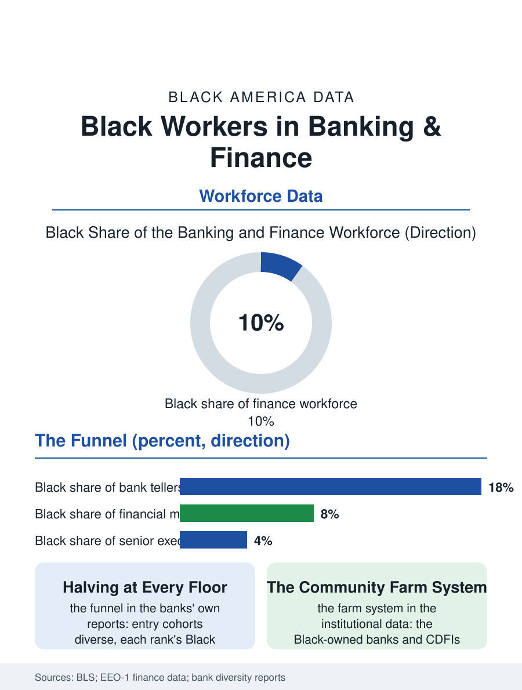

Black Employment
The Branch and the Tower: Black Workers in Banking and Finance
The branch is integrated, the tower is not, and each rank halves the Black share: the funnel the banks' own reports publish. The banking file.

Banking and finance employ roughly a tenth Black workforce in the aggregate data, a share that falls by half at each ascent of the industry's ladder, from the branch's tellers, the industry's most Black tier, through the officer corps to the trading floors and the partnership lists, whose Black share the industry's own diversity reports place in the low single digits. This article reads the banking and finance file.
The Branch and the Tower
The workforce's geography is vertical in both senses: the retail branch network, whose tellers and relationship bankers serve the community's deposit base, employs Black workers at or above their population share in the banks' published data, a tier whose automation, the shrinking branch count of the banking access file, is the workforce's standing threat, the branch job being the industry's traditional Black entry rung and its ladder's first step. The corporate and investment tiers invert the picture on the industry's own numbers: the analyst classes of the investment banks run in the low single digits Black, the partnership and managing director ranks thinner, the trading floors of the oral histories a study in tokenism's arithmetic well into the current century. The community banking tier, the Black-owned banks of the business file and the credit unions and CDFIs of the community finance file, employs a workforce whose Black share is the institution's mission, its scale a rounding error of the industry's payroll and its function, the training of Black bankers the majors later hire, out of all proportion, the community bank being the industry's farm system in the pattern of the Black press's role for journalism. The regulatory agencies, the Fed, the FDIC, the OCC, and the Treasury, employ a Black professional workforce of real weight, the public finance tier being, as in the other files, the most integrated corner of the industry it oversees.
The Ladder's Filters
The promotion file inside the industry data is the file's analytical core: the banks' own published diversity reports, an artifact of the disclosure era, show the funnel's shape with unusual clarity, entry cohorts substantially diverse, each successive rank's Black share roughly halving, the attrition concentrated at the vice president threshold where the client book becomes the currency, and the client book's allocation, the rainmaker's inheritance of relationships, distributing by the networks the segregated social economy built. The compensation data complete the funnel: the finance industry's pay premium over the economy is the largest in the wage data, so that the funnel's exclusions are priced at the economy's highest rate, the Black finance professional's career earnings gap against the white peer's being, in dollar terms, among the largest in the occupational files. The industry's corrective machinery, the diversity recruiting at the target schools, the sponsorship programs the banks now distinguish carefully from mentorship, the diverse slate requirements for the senior searches, posts its results in the reports' slow-moving percentages, the file's trend line, while the fintech sector replicates the industry's structure at startup scale, its workforce data showing the tech file's pattern wearing finance's clothes.
The Depositor's Workforce
The banking file closes on the relationship between the workforce and the deposit base it serves: the Black community's deposits, in the trillions across the industry's vaults by the wealth file's accounting, are gathered substantially by Black hands at the branch tier and allocated by hands of another description at the credit tier, the mortgage and small business files' denial gaps being, in the workforce's own analysis, partly a composition fact, the underwriting meeting's demographics being destiny more often than the manual admits. The community's standing demand, from the Operation Breadbasket era's covenants to the current banks' public commitments, has always joined the two files, deposits and jobs and loans in one negotiation, and the workforce data are the demand's scorecard across fifty years: the branch integrated, the tower inching, the farm system of the community banks still producing more bankers than its payroll should allow. The bureau counts the industry's Black workforce in the hundreds of thousands. The file's last entry is the teller line's: the industry's most public face in the community has been Black for two generations, while its credit decisions caught up at the pace the funnel measures, and the distance between the face and the decisions is the file, the industry, and the negotiation, all still open.
More in Black Employment
The Black Unemployment Rate: The Two-to-One Pattern
Black unemployment runs at roughly twice the White rate — 5.5 percent against 3.3 percent in annual averages — a ratio stable across five decades of federal data. How it is measured and why it persists.
Black Median Weekly Earnings: The 80-Cent Ratio
Black full-time workers earn a median of about $900 a week — roughly 80 cents for every dollar White workers earn. The BLS earnings data by group, gender, and occupation.
Black Labor Force Participation: Working at National Rates
Black labor force participation runs at roughly the national rate — and Black women participate at higher rates than White women. The BLS participation data.
Source: Bureau of Labor Statistics industry data; Equal Employment Opportunity Commission EEO-1 finance sector reports; major banks' published workforce diversity reports.